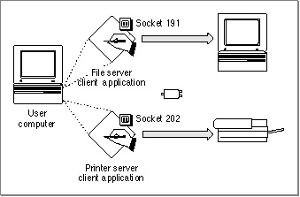
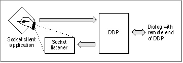

Legacy Document
Important: The information in this document is obsolete and should not be used for new development.
Important: The information in this document is obsolete and should not be used for new development.


About Sockets and Socket Listeners
Every application that uses DDP to transfer data must send or receive that data through a socket. The use of sockets allows DDP to determine for which application a packet
is intended. Each node supports up to 254 sockets, and each socket is identified by an 8-bit number that combines with the network number and the node ID to form the internet socket address of the application. When an application or process calls DDP to open a socket, DDP associates the number of that socket with the application, making the application distinct from other applications on the same node. An application
that is associated with a specific socket through DDP is the client of that socket, or a socket client.The use of sockets allows multiple processes or applications that run on a single node connected to AppleTalk to be open at the same time. In Figure 7-1, a printer server client application and a file server client application are open on the same node at the same time. Each application is associated with a unique socket, and packets for that applica-
tion are addressed to that socket number.Figure 7-1 Two applications running on the same node, each with its own socket

Applications exchange data with each other through their sockets. A socket client can send and receive datagrams only through its associated socket. Moreover, every socket-client application that uses DDP directly to transfer data must have associated with it a socket listener that receives datagrams addressed to the socket on behalf of
that socket's client application.A socket listener is a process that you provide as part of your client application. You must write your socket listener in assembly language and adhere to specific requirements in regard to the use of registers and the routines that you call to receive packets. Beyond meeting these AppleTalk requirements, your socket listener can perform any other functions that your socket-client application requires. See "A Sample Socket Listener" beginning on page 7-20 for more details.
When you call DDP to open a socket, you provide a pointer to your socket listener for that socket. DDP maintains a socket table that includes an entry for every open socket and its socket listener. When the .MPP driver receives a packet, it does not read and process the packet. Instead, it reads the socket number portion of the internet socket address and then checks the socket table to determine if that socket is open. If so, the .MPP driver calls the socket listener associated with the socket to handle reception of
the packet for the client application. The use of socket listeners helps to maximize throughput between DDP and the link-access protocol layer by eliminating unnecessary buffer copying.Figure 7-2 shows a socket-client application that calls DDP to send data to another socket. The socket-client application includes code that comprises its socket listener. When DDP receives a packet addressed to this socket, it checks the socket table for the entry that contains the socket number and the address of the socket listener belonging to the application that owns the socket; then DDP calls the socket listener to receive the packet for the application.
Figure 7-2 Sending and receiving data using DDP
